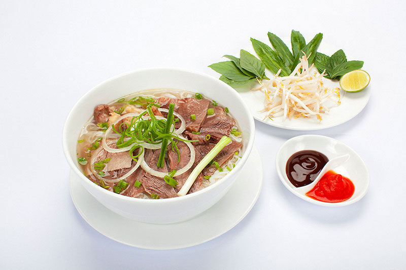

ベトナム料理は一般的にエスニック料理ととらわれがちなジャンルですが、辛い料理はほとんど存在しません。ベトナムでは食事に箸やお茶碗を使い、米を主食とし、お茶もよく飲みます。祝い事の席などには小麦粉や米粉で麺やお餅も作ります。日本の食文化によく似ていますが、ベトナムの食文化は１００年に及びベトナムを支配していた中国の影響を強く受け、炒める、蒸す、煮るなど、中華の手法が多く取り入れられ、小魚を塩漬けにして発酵させて作るヌックマムという醤油も中国の影響で使います。 しかし、このヌックマムは今やベトナム料理には欠かすことのできない調味料で、料理に適度な塩味と凝縮されたうまみを加えます。ただ、魚の調理法については直火で焼くことが多く、この手法はあまり中華料理にはないところで、日本料理やカンボジア料理の影響を受けているようです。 一方、ベトナムの朝食でポピュラーなものは米粉を使った麺料理のフォーと呼ばれるものですが、フランスパン で挟んだサンドイッチがあります。 １９世紀にベトナムが中国から独立した後、フランスが侵略し、そのフランス人達がベトナムで農業を展開してコショウや香辛料、洋野菜やコーヒーを栽培したため、歴史的に近年であることから現在ではフランスの食文化の影響を強く受けています。その名残から、料理は全体的に薄味で、各自が自分の好みに合うチリソースや甘酢ソースやレモン塩などをつけて食べます。また、カフェでコーヒーを飲む習慣がすっかり定着し、午後には多くの人たちがお茶の時間をゆっくりと楽しんでいます。 ベトナム料理における南部と北部の食文化 ベトナムは、北から南へ伸びたS字状の形をした国で、東側は海に隣接し、西側には山岳地帯が広がっています。面積は日本の９割ほどですが、南北では気候が大きく異なっており、ベトナム全体を南国のイメージ１つでくくることはできません。また、中国に隣接する北部と赤道に近い南部では、食文化も異なっています。 北部のデルタ地域では稲作が特に盛んで、その恵まれた土壌から味の良い米がたくさん生産され、ベトナムの米文化はこの北部から発達しています。ですから、ベトナムの米文化はハノイが本場と言えます。 北部の料理は塩辛いのが特徴で、塩や醤油が味のベースになっています。ハノイの料理は、全体的に甘みを抑えた薄味です。ハノイの農村地域では犬の肉を食べる習慣もありますが、さほど頻繁には食べません。 海に面していない北部の地域では川魚も食卓にのぼり、タニシなどを使った料理もあります。また、中国に隣接しているために中国の影響を受け、味噌や豆腐、麺を使った料理が多いのが特徴です。 中部地域の料理は塩気や唐辛子のピリッとした、はっきりとした味付けが好まれています。 中部地域東側は南シナ海に面していて、たくさんの漁港があり、海の幸に恵まれています。 一方、西側の山岳地域は、フランスの植民地だった時代の農業の名残が今でも残り、コーヒー、胡椒、お茶、洋野菜が栽培され、歴史を反映した食生活が残っています。 一方、南部では非常に蒸し暑い気候なので、砂糖を使用した甘辛い味が特徴です。 ライスペーパーを使った料理が多いのも特徴で、たっぷりの香草類と魚や肉をライスペーパーで巻いて食べるのが人気の食べ方です。生春巻きや揚げ春巻きが一般的ですが、米粉を使った生地に好みの具を入れて焼くバインセオも人気があります。 バインセオはベトナム風のお好み焼きで、南部のバインセオは生地にココナッツミルクが入っていて、コクがあって非常においしいです。 また、人気なのが、ボッチンです。ボッチンは、揚げたお餅を卵で炒めた料理で、ホーチミンではボッチン・ストリートと呼ばれる通りがあるほど有名です。
